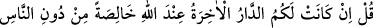
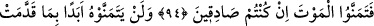
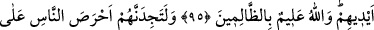
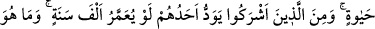
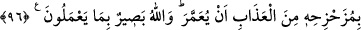

Bunu duyunca Peygamber (s.a.) ve ashâbı ağlamaya başladılar. Peygamber Efendimiz
buyurdu ki:
“Ya Rabbi bir kelime-i şehâdetle Dıhye’nin bu kadar günahını affettin de, binlerce
kelime-i şehâdet getiren, doğru söz ve amel sahibi mü’minleri nasıl bağışlamazsın?!”
Nitekim Mesnevî’de şöyle gelmiştir:
Cenâb-ı Hakk’ı zikretmek, her isyânkârın işi değildir.
“Bana dön” emri, her müfsid hakkında geçerli değildir.
Sa’dî de şöyle der:
Eğer mahşerde Hakk katından “kahr” ile hitâb gelirse
Peygamberlere mazeret için başvurmaya gerek kalmaz.
Eğer o gün, Hakk Teâlâ lütuf ve keremiyle hıcâbı kaldırırsa,
Şakîlere bile af ve mağfiret umudu doğar,
94. (Ey Muhammed, onlara) Şayet (iddia ettiğiniz gibi) âhıret yurdu Allah
katında diğer insanlara değil de yalnızca size aitse ve bu iddiânızda doğru iseniz
haydi ölümü temenni edin (bakalım), de.
95. Onlar, kendi elleriyle önceden yaptıkları işler (günah ve isyanları) sebebiyle
hiçbir zaman ölümü temenni etmeyeceklerdir. Allah zâlimleri iyi bilir.
96. Yemin olsun ki, sen onları yaşamaya karşı insanların en düşkünü olarak
bulursun. Putperestlerden her biri de arzular ki, bin sene yaşasın. Oysa yaşatılması
hiç kimseyi azâbtan uzaklaştırmaz. Allah onların yapmakta olduklarını eksiksiz
görür.
Yâni eğer cennetin Muhammed ve ashâbına değil de sırf size âid olduğuna inanıyor
iseniz kalbinizle ve dilinizle samîmî olarak “ya Rabbi bizi öldür” deyin, Çünkü cennete
gireceğini kesin olarak bilen kimse, ona iştiyâk duyar. Ni’mete çabucak ermeyi, keder
ve kasvet yurdu olan şu dünyâdan bir an önce ayrılmayı temennî eder. Çünkü oraya
girmenin tek yolu, ölümdür. O zaman ölümü istemekte acele edin. “Temennî”